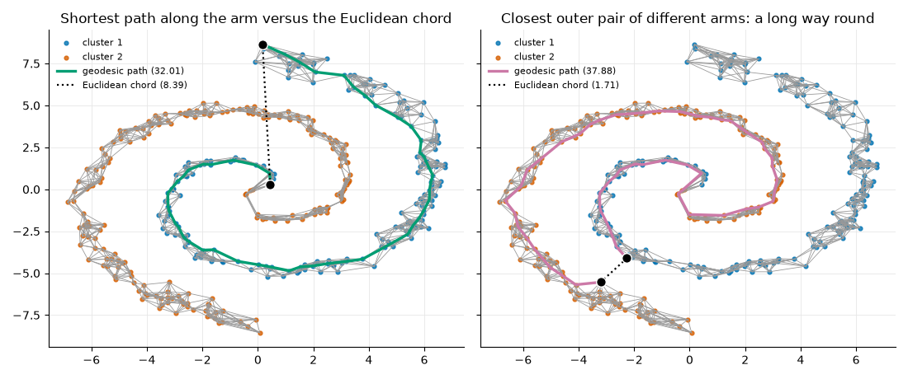
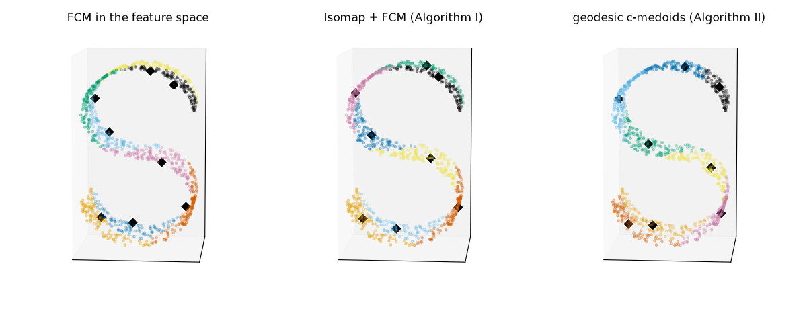
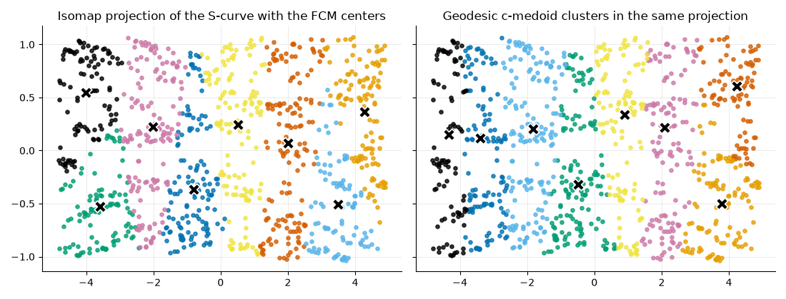
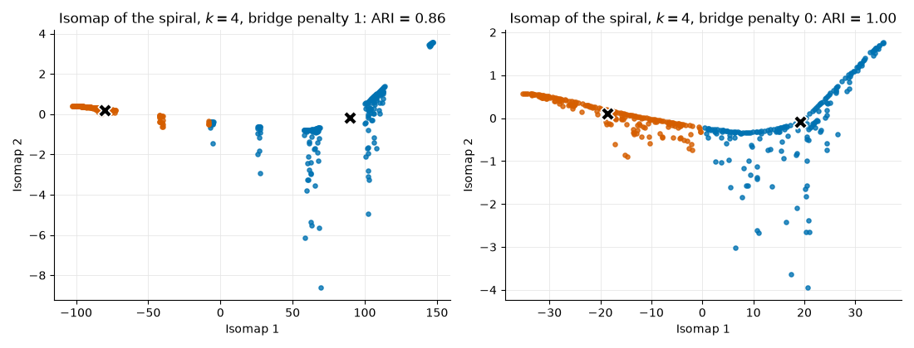

Note
Go to the end to download the full example code or to run this example in your browser via Binder.
Geodesic paths, the S-curve, and clustering of the Isomap projection#
The geodesic distance between two samples is the length of the shortest
path in the neighborhood graph. This example first draws such a path
next to the Euclidean chord to make the difference tangible and then turns
to the first benchmark of the paper, the three-dimensional S-curve, on
which eight clusters are sought. Two routes are compared. Algorithm I
projects the data with Isomap (classical MDS of the geodesic distance
matrix), runs fuzzy c-means on the projection, and re-projects every
center as the sample closest to it; Algorithm II (GeodesicFCM)
clusters in the feature space with geodesic distances and medoids.
Both place their prototypes on the manifold, which fuzzy c-means in the
feature space does not, and the cost function evaluated with geodesic
distances shows which partition follows the manifold better. Finally, the
spiral illustrates the effect of the graph components on Algorithm I.
Isomap can only embed a connected graph, so the components have to be
bridged, and the penalty of the bridges determines whether the arms stay
apart in the projection.
import matplotlib.pyplot as plt
import numpy as np
from sklearn.metrics import adjusted_rand_score
from fuzzyclust import FCM
from fuzzyclust.datasets import make_curved_manifold
from fuzzyclust.graph import (
GeodesicFCM,
IsomapFCM,
geodesic_distances,
make_s_curve,
plot_geodesic_path,
plot_neighbors_graph,
)
from fuzzyclust.plotting import PALETTE, plot_clusters
A geodesic path and its Euclidean chord#
Two samples on neighboring turns of a spiral arm are close in the plane
but far apart along the arm. geodesic_distances returns the distance
matrix together with the graph, and plot_geodesic_path traces the
shortest path between two samples through that graph.
X, y = make_curved_manifold(n_samples=400, noise=0.05, random_state=0)
# [snippet:path]
geo = geodesic_distances(X, n_neighbors=8)
D, G = geo.distances, geo.graph
# two samples of the first arm, far apart along the arm
arm = np.flatnonzero(y == 0)
radius = np.linalg.norm(X[arm], axis=1)
source, target = arm[radius.argmin()], arm[radius.argmax()]
print(f"Euclidean distance {np.linalg.norm(X[source] - X[target]):.2f}, geodesic distance {D[source, target]:.2f}")
# [/snippet:path]
fig, axes = plt.subplots(1, 2, figsize=(11, 4.6), sharex=True, sharey=True)
plot_neighbors_graph(X, G, ax=axes[0], labels=y)
plot_geodesic_path(X, G, source, target, ax=axes[0])
axes[0].set_title("Shortest path along the arm versus the Euclidean chord")
# the closest samples of different arms in the outer part of the spiral:
# Euclidean neighbors, geodesically far apart (the path has to pass the center)
outer = np.linalg.norm(X, axis=1) > 4.0
arm_o, other_o = np.flatnonzero((y == 0) & outer), np.flatnonzero((y == 1) & outer)
cross = np.linalg.norm(X[arm_o][:, None] - X[other_o][None], axis=2)
i, j = np.unravel_index(cross.argmin(), cross.shape)
plot_neighbors_graph(X, G, ax=axes[1], labels=y)
plot_geodesic_path(X, G, arm_o[i], other_o[j], ax=axes[1], color=PALETTE[3])
axes[1].set_title("Closest outer pair of different arms: a long way round")
plt.tight_layout()

Euclidean distance 8.39, geodesic distance 32.01
The S-curve: prototypes on the manifold#
Eight clusters are sought on the S-curve, as in the paper. The Euclidean centers of FCM are means of points on both sides of a fold and float in the empty space between the sheets, whereas the medoids of the geodesic clustering and the re-projected centers of the Isomap route lie on the sheet. The paper compares the three partitions by their cost function \(J\), evaluated with geodesic distances to the (re-)projected prototypes. The two geodesic routes reach almost the same cost, well below that of FCM.
Xs, ts = make_s_curve(n_samples=1000, noise=0.0, random_state=0)
# [snippet:scurve]
fcm = FCM(n_clusters=8, random_state=0).fit(Xs)
geo = GeodesicFCM(n_clusters=8, n_neighbors=10, random_state=0).fit(Xs)
iso = IsomapFCM(n_clusters=8, n_components=2, n_neighbors=10, random_state=0).fit(Xs)
# geodesic cost of the FCM partition, with the samples closest to its centers as prototypes
Dg = geo.geodesic_distances_
fcm_proxies = np.linalg.norm(Xs[:, None] - fcm.cluster_centers_[None], axis=2).argmin(axis=0)
J_fcm = float(np.sum(fcm.membership_**2 * Dg[:, fcm_proxies] ** 2))
print(f"geodesic cost J: FCM {J_fcm:.0f}, Isomap + FCM {iso.geodesic_objective_:.0f}, "
f"geodesic c-medoids {geo.objective_:.0f}")
print(f"Isomap residual variance with 2 components: {iso.residual_variance_:.3f}")
# [/snippet:scurve]
fig = plt.figure(figsize=(12, 4.6))
for j, (model, name) in enumerate(((fcm, "FCM in the feature space"), (iso, "Isomap + FCM (Algorithm I)"),
(geo, "geodesic c-medoids (Algorithm II)"))):
ax = fig.add_subplot(1, 3, j + 1, projection="3d")
ax.scatter(Xs[:, 0], Xs[:, 1], Xs[:, 2], c=[PALETTE[i % len(PALETTE)] for i in model.labels_], s=6, alpha=0.6)
C = model.cluster_centers_
ax.scatter(C[:, 0], C[:, 1], C[:, 2], marker="D", s=70, color="black", edgecolor="white", depthshade=False)
ax.set_box_aspect((2, 2, 3.2))
ax.view_init(elev=8, azim=-85)
ax.set_title(name)
ax.set_xticks([])
ax.set_yticks([])
ax.set_zticks([])
plt.tight_layout()
# distance of every prototype from the sheet, measured to the nearest sample
for model, name in ((fcm, "FCM"), (iso, "Isomap + FCM"), (geo, "geodesic c-medoids")):
off = np.linalg.norm(Xs[:, None] - model.cluster_centers_[None], axis=2).min(axis=0)
print(f"{name:20s}: largest distance of a prototype from the nearest sample = {off.max():.3f}")

geodesic cost J: FCM 334, Isomap + FCM 269, geodesic c-medoids 273
Isomap residual variance with 2 components: 0.041
FCM : largest distance of a prototype from the nearest sample = 0.187
Isomap + FCM : largest distance of a prototype from the nearest sample = 0.000
geodesic c-medoids : largest distance of a prototype from the nearest sample = 0.000
The Isomap projection unrolls the S into a rectangle, on which FCM finds a regular tiling; the clusters of Algorithm II, colored in the same projection, cover the sheet in a similar way.
fig, axes = plt.subplots(1, 2, figsize=(11, 4.2), sharex=True, sharey=True)
plot_clusters(iso.embedding_, iso.labels_, iso.embedded_centers_, ax=axes[0], legend=False)
axes[0].set_title("Isomap projection of the S-curve with the FCM centers")
plot_clusters(iso.embedding_, geo.labels_, iso.embedding_[geo.medoid_indices_], ax=axes[1], legend=False)
axes[1].set_title("Geodesic c-medoid clusters in the same projection")
plt.tight_layout()

Parameter study: fragments, bridges and the Isomap dimension#
With \(k=4\) the sparsely sampled outer parts of the spiral arms
break off into separate graph components, which are fragments of one
arm, not clusters. Both algorithms bridge the components through their
closest pairs, and the weight of the bridges now matters. The default
penalty (a bridge is longer than any path inside a component) keeps every
fragment apart, so two clusters cannot collect seven fragments correctly.
A plain Euclidean bridge (bridge_penalty=0), in contrast, rejoins the
fragments of an arm at their natural junctions, and both algorithms
recover the arms. The penalty is the right choice when the components
are the clusters (rings, moons), and the plain bridge when they are
fragments; comparing the component count with the number of clusters
shows which case applies. Beyond two, the number of Isomap dimensions
matters little for the clustering of the S-curve, whereas a single
dimension gives a much higher geodesic cost; the residual variance shows
how much of the geodesic geometry the projection keeps.
# [snippet:isomap_scan]
print(" k penalty components ARI(Isomap+FCM) ARI(geodesic) residual variance")
for k in (4, 6, 10):
for penalty in (1.0, 0.0):
iso_s = IsomapFCM(n_clusters=2, n_neighbors=k, bridge_penalty=penalty, random_state=0).fit(X)
geo_s = GeodesicFCM(n_clusters=2, n_neighbors=k, bridge_penalty=penalty, random_state=0).fit(X)
print(f"{k:2d} {penalty:5.1f} {iso_s.n_components_:9d} {adjusted_rand_score(y, iso_s.labels_):13.2f}"
f" {adjusted_rand_score(y, geo_s.labels_):12.2f} {iso_s.residual_variance_:16.3f}")
# [/snippet:isomap_scan]
fig, axes = plt.subplots(1, 2, figsize=(11, 4.2))
for ax, penalty in zip(axes, (1.0, 0.0), strict=True):
iso_s = IsomapFCM(n_clusters=2, n_neighbors=4, bridge_penalty=penalty, random_state=0).fit(X)
plot_clusters(iso_s.embedding_, y, iso_s.embedded_centers_, ax=ax, legend=False)
ax.set_title(f"Isomap of the spiral, $k=4$, bridge penalty {penalty:.0f}: ARI = "
f"{adjusted_rand_score(y, iso_s.labels_):.2f}")
ax.set_xlabel("Isomap 1")
ax.set_ylabel("Isomap 2")
plt.tight_layout()
for q in (1, 2, 3):
iso_q = IsomapFCM(n_clusters=8, n_components=q, n_neighbors=10, random_state=0).fit(Xs)
print(f"S-curve, {q} Isomap component(s): residual variance {iso_q.residual_variance_:.3f}, "
f"geodesic cost {iso_q.geodesic_objective_:.0f}")

k penalty components ARI(Isomap+FCM) ARI(geodesic) residual variance
4 1.0 7 0.86 0.86 0.000
4 0.0 7 1.00 1.00 0.002
6 1.0 3 0.78 0.78 0.001
6 0.0 3 1.00 1.00 0.002
10 1.0 1 1.00 1.00 0.002
10 0.0 1 1.00 1.00 0.002
S-curve, 1 Isomap component(s): residual variance 0.086, geodesic cost 665
S-curve, 2 Isomap component(s): residual variance 0.041, geodesic cost 269
S-curve, 3 Isomap component(s): residual variance 0.036, geodesic cost 272
Take-away. The geodesic distance follows the manifold: a path between two turns of an arm runs along the arm, and the closest pair of samples of different arms is geodesically far apart. On the S-curve, both geodesic routes place their prototypes on the sheet, while the FCM centers hover between its layers, and the geodesic cost ranks the partitions. When the graph is fragmented, the weight of the bridges determines the result of both algorithms. Penalized bridges keep components apart (right when the components are clusters); plain bridges rejoin fragments of one manifold (right when \(k\) was too small). Algorithm I leaves the exploration of the manifold to Isomap and depends on the quality of the projection; Algorithm II works with the distances directly and only needs the graph to be meaningful.
Total running time of the script: (0 minutes 2.488 seconds)